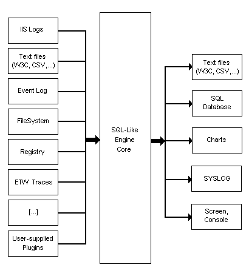

LogParser — привычный взгляд на непривычные вещи
Когда я в очередной раз использовал LogParser, то чтобы проникнуться и чужим опытом, ввел его название в поиск на Хабре. Как результат — сообщение «Удивительно, но поиск не дал результатов». Вот уж воистину удивительно, когда столь интересный инструмент обойден вниманием. Пришла пора восполнить этот пробел. Итак, встречайте LogParser. Маленькая, но чертовски полезная утилита для любителей SQL.
Из названия инструмента, казалось бы, очень непросто понять, что он делает в разделе SQL. А правда заключается в том, что он такой же LogParser, как и ChartGenerator. В то смысле, что он справляется с обоими задачами с одинаковыми успехом. В целом я бы его охарактеризовал как SQL-процессор гетерогенных данных. Концепция работы в общем такова, что он берет данные из некоторого формата и преобразует их в табличный вид (собственно говоря, только на этом этапе и выполняется иногда парсинг). Затем, посредством выполнения над этими табличными данными некоторого SQL-запроса формирует таблицу с результатом и сохраняет ее опять же в некотором формате. Если коротко, то цепочка выглядит как подготовка входных данных->SQL-процессинг->генерация выходных данных.Или, как это проиллюстрировано в документации:

Пора, пожалуй переходить от теории к практике, ибо она гораздо более наглядна. Начнем для затравки с такого примера:
X:\>LogParser.exe -i:FS -o:CSV "SELECT TOP 100 HASHMD5_FILE(Path) AS Hash, COUNT(*) AS FileCount, AVG(Size) AS FileSize INTO Duplicates.csv FROM X:\Folder\*.* GROUP BY Hash HAVING FileCount > 1 AND FileSize > 0 ORDER BY FileSize DESC"
Statistics:
-----------
Elements processed: 10
Elements output: 2
Execution time: 0.06 seconds
Я думаю многие сразу догадалось, что за таинство здесь произошло. В привычном и знакомом SQL-стиле мы осуществляем выборку… файлов из папки X:\Folder, группируем эти файлы по MD5, чтобы выявить среди них дубликаты по содержанию. Естественно, отбрасываем те случаи, когда количество таких файлов = 1 (т.е. одинаковых нет). В дополнение мы упорядочиваем найденные дубли в порядке убывания размера и выводим только top100 самых великовесных. Чтобы убедиться в правильности результата — загляните в файл Duplicates.csv. Там вы найдете что-то в следующем духе:
Hash,FileCount,FileSize
7EF9FDF4B8BDD5B0BBFFFA14B3DAD42D,2,5321
5113280B17161B4E2BEC7388E617CE91,2,854
Первым значением будет MD5-хэш найденных дублей, вторым — их количество и третьим — размер. Попробуем теперь разложить код примера в соответствии с ранее описываемой концепцией. Входные данные определяются провайдером входного формата и некоторым адресом согласно выбранному провайдеру. В нашем случае он задается опцией -i:FS для файловой системы. А адресуются конкретные данные (папка X:\Folder) в части FROM нашего SQL-запроса. Запрос к реестру, например, для ветки \HKLM\Software выглядел бы так: LogParser.exe -i:REG «SELECT * FROM \HKLM\Software». Провайдер — REG, адрес — \HKLM\Software.
По умолчанию LogParser предлагает нам следующие провайдеры исходных форматов:
IIS Log File Input Formats
Generic Text File Input Formats
System Information Input Formats
Special-purpose Input Formats
Уже немало. А учитывая, что можно создавать свои собственные провайдеры — вообще замечательно. Позже я затрону этот вопрос и покажу как можно их создавать как «по-взрослому», используя скомпилированные сборки, так и «на-лету», просто с помощью скриптов.
Формат артефакта на выходе определяется похожим образом. Опцией -o:CSV мы указали, что нас интересует провайдер для CSV-файлов, а в части INTO нашего SQL-запроса адресовали искомый файл, куда будет сохранен результат. По аналогии с входными провайдерами перечислим и выходные, доступные «из коробки».
Generic Text File Output Formats
Special-purpose Output Formats
Давайте попробуем еще один пример для затравки с совершенно другими входными и выходными провайдерами. Например, часто встречаемая задача по анализу логов веб-сервера и выводу топа ссылающихся сайтов.
c:\Program Files\Log Parser 2.2>LogParser.exe -i:W3C -o:CHART "SELECT TOP 10 DISTINCT EXTRACT_TOKEN(EXTRACT_TOKEN(cs(Referer), 1, '://'), 0, '/') AS Domain, COUNT(*) AS Hits INTO Hits.gif FROM X:\ex0909.log WHERE cs(Referer) IS NOT NULL AND Domain NOT LIKE '%disele%' GROUP BY Domain ORDER BY Hits DESC" -chartType:Column3D -chartTitle:"Top 10 referrers" -groupSize:800x600
Statistics:
-----------
Elements processed: 1410477
Elements output: 10
Execution time: 16.92 seconds
Как видите, LogParser перемолотил почти полтора миллиона записей менее чем за 17 секунд с нетривиальными условиями на древнем Pentium D 2.8, что, на мой взгляд, далеко не такой плохой результат. Ну а главный результат — на картинке:
Мне кажется — это потрясающий инструмент для базаданщиков :), ибо позволяет применить магию SQL там, где нам зачастую хотелось, но было невозможно. За сим тезисом я пока приостановлю своё повествование. Во-первых, говорить о LogParser можно еще очент долго и в рамки одного поста он не поместится. Во-вторых, хочется надеятся, что настоящего материала достаточно, чтобы хоть чуть-чуть заинтересовать коллег по цеху и понять, насколько они разделяют мой восторг от этой утилиты. А как только будут заинтересованные в продолжении, я незамедлительно это сделаю, благо нераскрытых тем осталось очень много. Это и режим конвертирования. И формирование выходных данных напрямую, а также с помощью LogParser-шаблонов и XSLT. Инкрементный режим для работы с большими объемами данных. Создание собственных входных форматов на примере C# и JavaScript. Использование LogParser из приложений. Мультввод и мультивывод в несколько файлов. Знакомство с обилием тонкостями SQL LogParser'а, включая громадье его функций. Различные опции и настройки командной строки. Тонкости тех или иных провайдеров и их настройка. Ну и конечно, больше примеров всяких и разных :)